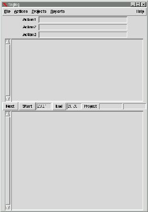
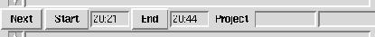
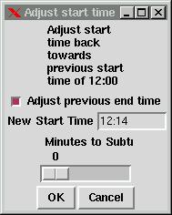
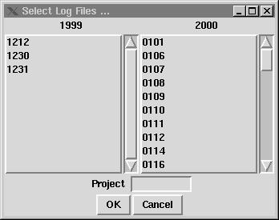
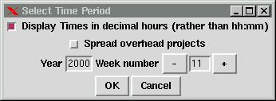

I assume you have already installed taglog, as described in the installation instructions Run it in the appropriate way for your platform
The initial screen should look like this:

At the top is a menubar, below that is a window which shows the previous entries for today, which will be empty if this is the first time you have run the program. Below this is a bar with the buttons related to the current entry - like this:

Note that the Start time should be the time that you started the program, and that the End time will increase every minute.
Try entering some text in the entry window (the one at the bottom), and then click on 'Next'
The text you entered in the entry window should appear in the days log
window, labeled with its start and end times.
What you have learned so far should help you if you simply wish to
keep a record of what you did during the day - an electronic day book,
with the advantage of having the entries automatically time stamped.
The next stage is to add some Projects.
Click on Projects on the top menubar, which will bring down a sub menu.
Click on 'Add...'
A window will pop up which allows you to type in the name of a project.
Enter names for the projects you spend time on.
On the 'current' menubar is a button labeled Project - click on it to produce a menu, which should include the names of the project or projects you have just added. You can select the name of a project to be associated with the current log entry by selecting the project through that menu entry, or by entering the name of the project in the field next to the 'Project; button. Note that entering the project in the field will not add it to the list of available projects for selection.
Try making some log entries associated with different proejcts, then click on Projects/View in the main menubar. A window will pop up showing the time spent on all the projects you have used. Entries which have no project associated with them are labeled as unknown.
You can find out more about Projects in the Projects chapter of the tutorial.
You can also select an activity by *Right Clicking* on Next, which pops up a menu of activities. Selecting one starts the next log entry, with the activity field set to whatever you selected.
Under the Reports menu you can select "Time by Activity" which shows a breakdown of how your time is spent on various activities.
The names of the activities are read from a file, usually called activities in the same place as your other taglog files, but the location of this file can be changed in the preferences.

You can use the slider to alter the time, or enter a new time. If the
'Adjust previous end time' box is checked (the default) then the end time
of the previous entry will be adjusted to match.
To exit the program at the end of the day select 'File' in the main
menubar, and then 'Exit'. You will be prompted to enter a summary of the
days events. You can skip this by pressing 'Cancel' on the summary window.
You can also exit by selecting 'Quit', which exits immediately, without
saving the current item.
You will be offered a popup with the dates for which there are log entries. The dates are in the form monthday - for example 0704 is the Fourth of July.

Select the dates you are interested in, and click OK. You can restrict
the display to a particular project by clicking on the Project button and
selecting its name from the drop down menu, or by
typing its name in the field next to the Project button.
There is an option to save the displayed entries to a file, which can
be used to create a report of work on a particular project, for example
to mail to other people interested in progress on that project.
The program keeps a running total of the time spent on all the projects
you have used today. To display it use the option 'Projects/View' in the
main menu bar.
The time spent on the current project, and the total time spent is continously
updated. Note that if you have a project called 'breaks' (by default -
strictly any project in the breaks_projects list) then it is counted separately
from working projects,
You will see a pop up window like

Enter a week number, or increase or decrease using the '-' and '+' buttoms
and press 'OK'
You can display the times as hours and minutes or as decimal hours,
or as decimal days.
There are other features of the program which are not yet covered in this tutorial, some (such as actions) are not fully complete, but will be added to the tutorial as soon as they are ready. Refer to the TODO list to see which features are still waiting to be implemented, and to the changelog to find out about recent changes. Please feel free to experiment, and to let me know which facilities you find useful, and any ideas which may improve the program